Home
Web Scraping LinkedIn Jobs using Python.
#webscraping #automation #linkedin
#python #selenium #sqlserver #pagesource #dataprocessing #datatransformation #dataexport
Project scenario
Today is Friday and your boss gives you a task to collect "1000 JOBS" related to Data Analyst keywords worldwide and must be completed by Monday to send to your boss.
- Execute projects manually: imagine that it takes you 20 seconds at the fastest to save a job, with 1000 jobs, it takes you more than 5.5 hours to complete the task and not to mention that this task can be repeated every week, month, or quarter. This causes you to spend your weekends doing this.
- Implement the project by creating a bot that can automatically scrape data using the Python Selenium library. This approach may take hours in the beginning to create a bot, but it will help you automate tasks for similar tasks.
Expected results
The expected results will be two files (Job list and Skill list) and those will be export as XLSX and CSV forms. The objective of the project is to collect, understand and analyze the following criteria:
Task Planning
Pre-task: IMPORTING
** Import libraries: in this project, selenium lib is mainly used to run the Chrome driver
import pandas as pd
from datetime import date
from selenium import webdriver
from selenium.webdriver.common.keys import Keys
from selenium.webdriver.common.by import By
from selenium.webdriver.support import expected_conditions as EC
from selenium.webdriver.support.ui import WebDriverWait
from selenium.webdriver.common.action_chains import ActionChains
from time import sleep
from random import randint
import xlsxwriter
import re
** Import logging information: create a .txt file to contain information such as username, password, searching job, location.
## Create .txt file containing login data
credential = open('loginCRE_JOBS.txt')### Open the txt file
line = credential.readlines() ### Read the file by line
username = line[0] ### Line 0 = username
password = line[1]
keyword = line[2]
location = line[3]
Task 1: Open Chrome and Login to Linkedin
** Open Chrome & Import user account (Linkedin):
In order to provide a concise overview of the data scraping procedure, the initial step involves opening Chrome and logging into a LinkedIn account.
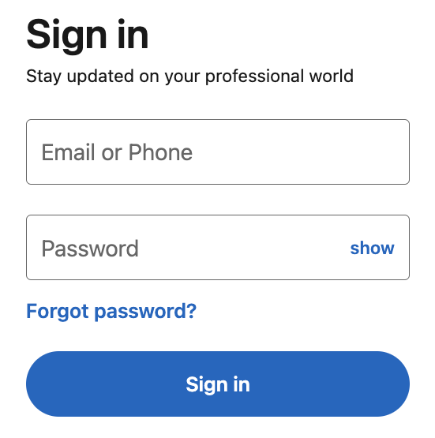
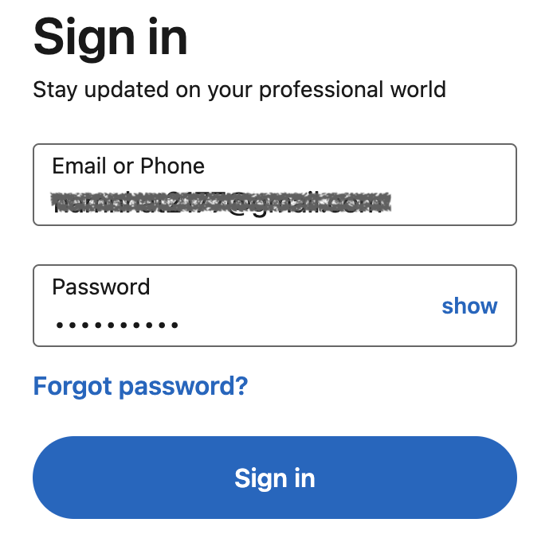
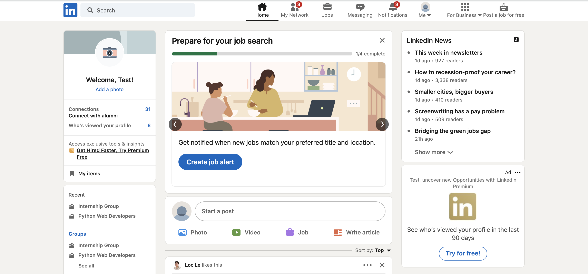
TASK 2: SEARCH FOR THE JOB WANT TO CRAWL
** Location Job search box
Afterwards, enter job-related keywords into the search bar and hit the Enter key. Proceed to choose the Jobs section and click on "See all job results" to access a comprehensive list of available jobs.
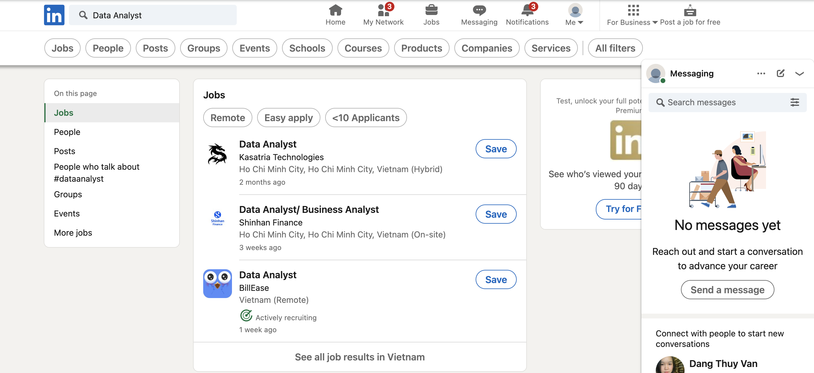
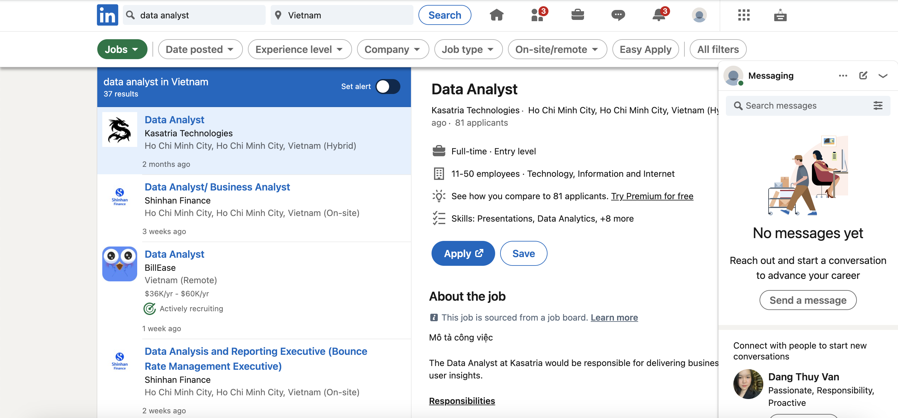
** Location search box (worldwide)
Subsequently, the bot will proceed to select the location field and automatically input the location already specified in the .txt file, encompassing worldwide data.
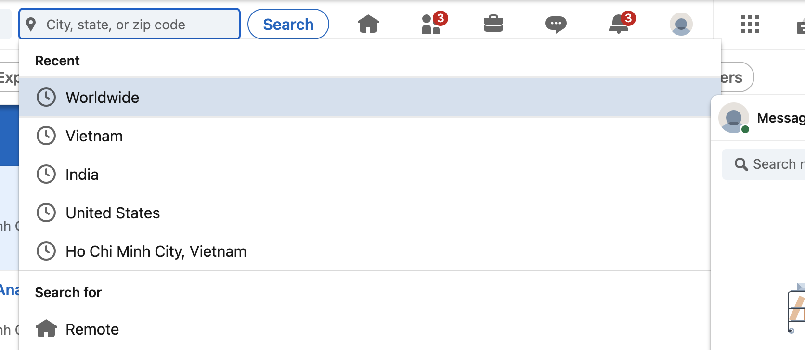
** Needed Information Location
Once this step is completed, the job listings will become visible, and the objective of this project is to extract the following information: Job posting time, Job title, Required skills, Company name, Employment type (Full-time, Part-time, Internship), Workplace type (Remote, hybrid, on-site), Location, Company size, Total number of applicants, Industry of the company
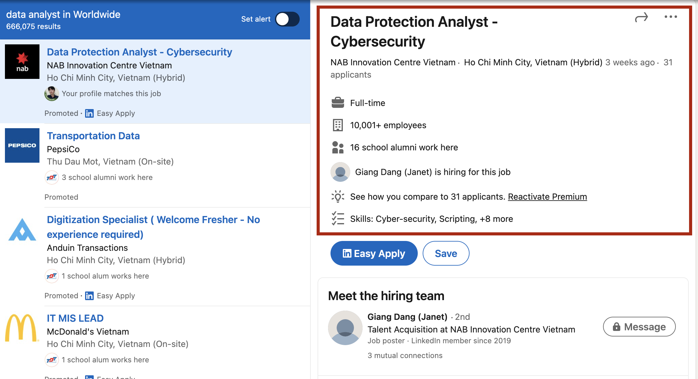
TASK 3 & 4: STARTING COLLECTING JOBS & DATA PREPROCESSING
The Selenium library can be utilized to develop a bot capable of emulating the aforementioned actions. For the code reference, please check the provided GitHub link. After undergoing preprocessing and transformation, the data appears in the following format:
For the skill column, due to the complexity of storing skill data as depicted in the image, a solution has been devised. Two new dataframes have been created from the raw data, namely job_list and job_skill. The job_list dataframe stores job data, with each record representing a job and the primary key being job_id. On the other hand, the job_skill dataframe stores skill data associated with each job and is linked to the job_list table via the job_id column.
HERE IS THE TRANSFORMED DATA AFTER UNDERGOING PREPROCESSING AND TRANSFORMATION:
Considering that LinkedIn encompasses a total of 40 pages, the data scraping process can be time-consuming. The estimated time for the bot to scrape the data is approximately 90 minutes. Nonetheless, this duration is still significantly faster compared to manual extraction.
After an extended period of waiting, the obtained data appears in its raw format.
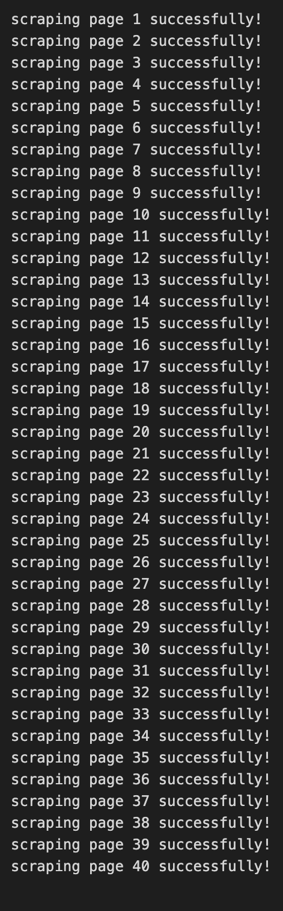
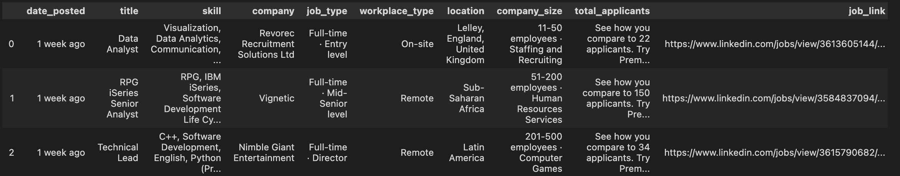
## Split company_size field into company_size and industry
## Delect unneeded string and replace the blank space by 0
In addition, the company_size column contains two pieces of information in each value: the company's size and industry. To address this, the industry information has been separated into a new column. The job_type column has undergone a similar processing step.
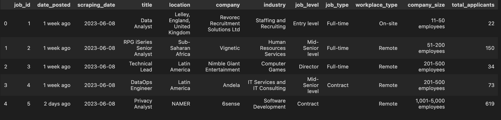
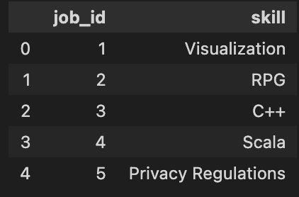
TASK 5: Export data into Excel file
Export the file to excel (.xls) or text (.csv) format to submit the project to the manager, or continue to perform data analysis steps with SQL Server or visualize data with Power BI.
# TO EXCEL FORMAT
## Job_list
writer = pd.ExcelWriter('/Users/namhuynh/Desktop/WS(linkedinJOBs)/job_list_final.xlsx')
job_df.to_excel(writer)
workbook = writer.book
worksheet = writer.sheets["Sheet1"]
writer.close()
## Job_skill
writer = pd.ExcelWriter('/Users/namhuynh/Desktop/WS(linkedinJOBs)/job_skill_final.xlsx')
job_skill_unpivot.to_excel(writer)
workbook = writer.book
worksheet = writer.sheets["Sheet1"]
writer.close()
# TO CSV FORMAT
## Job_list
job_df.to_csv(r'/Users/namhuynh/Desktop/WS(linkedinJOBs)/job_df.csv')
## Job_skill
job_skill_unpivot.to_csv(r'/Users/namhuynh/Desktop/WS(linkedinJOBs)/job_skill.csv')
Extra-task: ANALYZING
During this step, SQL Server was utilized to query the essential data regarding skills, location, industry, and company size. The dataset has provided several valuable insights. However, it should be noted that due to LinkedIn's system limitations, some job listings unrelated to the Data industry may still be present. Consequently, the following results should be considered relative and provide a general overview.
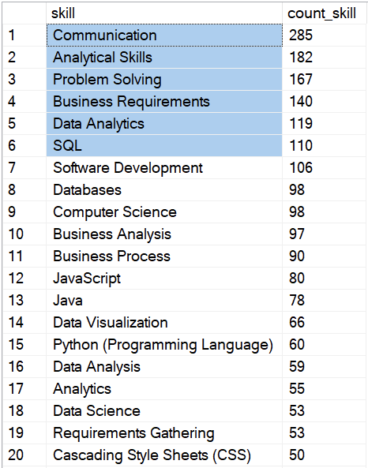
Among the required skills, communication skills stand out as the most popular skill sought after by recruiters. Following closely behind is proficiency in the Analytical Skills. These two skills are deemed crucial not only for data professionals but also for individuals in various fields, as they significantly contribute to securing high-paying job opportunities.
Particularly within the data domain, such as Data Engineers, Data Analysts, or Data Scientists, possessing strong communication skills becomes essential for effective information exchange regarding analysis projects, model development, project timelines, and more, with clients and stakeholders.
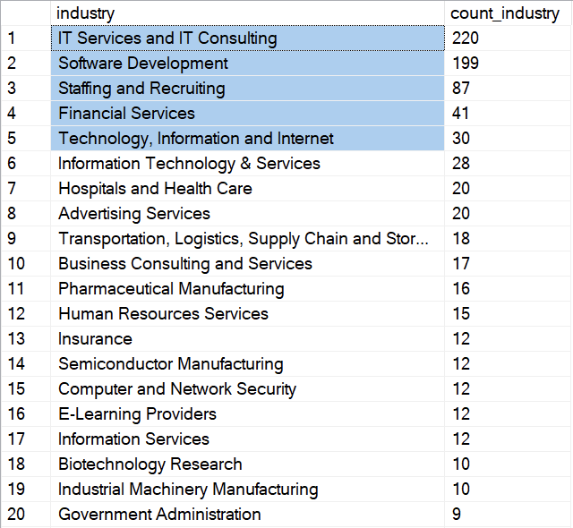
The data shows that technology and digital transformation industries have a high demand for Data professionals, while Government Administration sectors have relatively low demand. This highlights the prioritization of data utilization in technology-driven sectors for decision-making, insights generation, and digital transformation initiatives, whereas data-driven decision-making may be less prevalent in government administration industries.
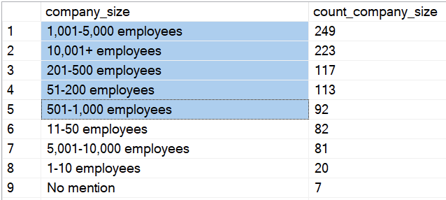
The data reveals that the majority of companies recruiting on LinkedIn are large-scale companies. This indicates a high level of professionalism in their recruitment processes and signifies fierce competition among candidates seeking opportunities within these organizations.
For more Projects